Emacs for developers
Table of Contents
- 1 Emacs for developers
- 2 Table of contents
- 3 Introduction
- 4 The basics
- 5 Building your own editor
- 5.1 First basic configuration
- 5.2 General basic configuration
- 5.3 Backup files
- 5.4 Setting up the locales
- 5.5 More configuration
- 5.6 Modes
- 5.7 Package managers
- 5.8 Some useful packages
- 5.8.1 Auto complete
- 5.8.2 Autopair
- 5.8.3 Buffer move
- 5.8.4 Flycheck
- 5.8.5 Highlight symbol
- 5.8.6 Ido
- 5.8.7 JS3
- 5.8.8 Magit
- 5.8.9 Multiple cursors
- 5.8.10 PHP mode
- 5.8.11 Rainbow mode
- 5.8.12 RHTML mode
- 5.8.13 Ruby mode
- 5.8.14 Switch window
- 5.8.15 Visual regexp
- 5.8.16 Yaml mode
- 5.8.17 Yasnippet
- 5.8.18 Paredit
- 5.9 Code navigation
- 5.10 Setting a color theme
- 6 Special features
- 7 Readings and resources
- 8 License
- 9 Thanks
1 Emacs for developers
This document will (hopefully) help you to use Emacs like a sir !

Using Emacs like a sir
- Disclaimer
Work in progress, so stay tuned.
2 Table of contents
- 1. Introduction
- 2. The basics
- 2.1 Config files
- 2.2 Executing commands
- 2.3 Key bindings
- 2.4 Help!
- 3. Building your own editor
- 3.1 First basic configuration
- 3.2 General basic configuration
- 3.3 Backup files
- 3.4 Setting up the locales
- 3.5 More configuration
- 3.6 Modes
- 3.7 Package managers
- 3.8 Some useful packages
- 3.9 Code navigation
- 3.10 Setting a color theme
- 4. Special features
- 5. Readings and resources
3 Introduction
3.1 Brief history
- Originally developed by Richard Stallman and Guy Steele in MIT AI lab
- First release in 1976
- Inspired by TECO editor
- Based on macros (Emacs stands for Editor MACroS)
- Written in C and Emacs Lisp
- Part of the GNU project (therefore, we should say "GNU Emacs", not "Emacs")
- Despite its age, new users are still adopting Emacs as their development platform to this day!
3.2 How to get Emacs?
On every Linux distribution, packages are available. So run your favorite package manager to install it:
- apt-get install emacs
- yum install emacs
- …
And if you have an exotic operating system, here are the specific distributions:
- Mac OS X: http://emacsformacosx.com/
- Windows: http://ftp.igh.cnrs.fr/pub/gnu/emacs/windows/
But, in order to get the latest version, it's highly recommended that you compile Emacs yourself: http://ftp.igh.cnrs.fr/pub/gnu/emacs/
3.3 More than an editor
- More than an editor, it is a Lisp interpretor
- Can run any type of program written in Lisp:
- Email clients (like Gnus or mu4e)
- Shell (like bash or eshell)
- File and directory management (with Dired mode)
- Agenda / Notes / TODO list / Project management (with the amazing OrgMode)
- IRC / Twitter / Jabber / … clients
- Games (like Tetris, Pong, Snake, 5x5, Dunnet, …)
- Encrypt/decrypt files (like GPG files)
- On-the-fly archives editing (thanks to archive-mode)
- PDF / Image / (…) viewer
- A powerful front end to R / S+ / SPSS / Stata (with EmacsSpeaksStatisics)
- An editor for multi-modal REPL's like IPython (with EmacsIPythonNotebook)
- Music player (with emms, vlc, mplayer, …)
- Music programming (with Overtone)
- Video editing
- And so on …
- (and of course a document editor that can automatically generate this presentation)
Naturally, you can do all of that at the same time with only one Emacs instance. Don't need to say it …
3.4 The perfect development tool
- As Emacs is a Lisp interpretor, it is extensible. Really really extensible.
- The (unofficial) goal of Emacs is to be hacked
- Therefore your goal is to hack Emacs to make it work perfectly as you want
- Already provides so many development tools (also extensible, of course)
- Debuggers
- Compilers
- Syntax checkers
- Documentations
- Consoles
- …
- Also provides modes (extensions) for every programming language for
- Syntax highlighting
- Documentation search
- Indentation
- Source code browsing
- Compilation commands
- Specific behaviour
- …
4 The basics
4.1 Config files
In order to customize Emacs, you will have to edit its configuration files. It does not exist when you install the software (or is an empty file) and does nothing until you decide to tweak Emacs. Some people use Emacs for decades without any extra configuration because they like it out of the box.
There are several ways to manage your Emacs configuration:
- Simply create and edit a ~/.emacs file
- Create a ~/.emacs.d/ directory with a ~/.emacs.d/init.el file
The first solution is great if you have a small, tidied and exportable configuration file.
The second solution is great if you need several configuration files (keep you configuration parts separated) or you need to install external extensions (you will install them in ~/.emacs.d to keep them centralized and exportable).
4.2 Executing commands
The main idea of Emacs is that everything is a command. For example: opening a file with a keybinding calls a command that is executed by the Emacs' core. And all the commands are written in Lisp.
To call a command, you simply have to press Escape and then x. It could be Alt-x for more comfort. The official name is "Meta x" and is written M-x
If you type this key sequence, you will see at the bottom of the editor a little prompt. This part of Emacs is called the mini buffer and is used for every interactive actions.
Let's try something:
- type M-x
- Then, in the minibuffer, type version and RET (return)
Emacs should display the current version number of the software.
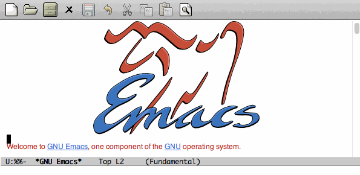
Execute the version command
Congratulations! You just called your first Emacs command.
4.3 Key bindings
Here are the most useful keys in Emacs. You will use them several hundreds (or thousands) times a day.
How it works?
- The sequence C-something means that you have to press and hold the Control key while hitting the something key. Example: C-a means Control + a.
- The sequence C-something somethingelse means that you press Control + something, then you release Control to hit somethingelse.
- The sequence C-something C-somethingelse means that you have to press Control while hitting something and somethingelse.
4.3.1 Manipulate files
- C-x C-f: open a file
- C-x C-s: save a file
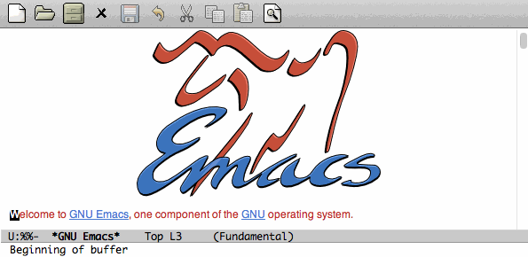
Open a file, modify it and save it
4.3.2 Manipulate the line
- C-a: go to the begining of the current line
- C-e: go to the end of the current line
- C-k: cut the rest of the line at the cursor position
- C-y: paste what you had cut with the command above
- C-l: center the buffer at the cursor position
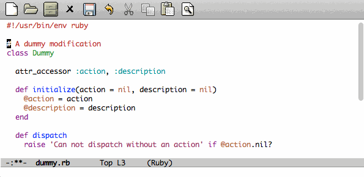
Line manipulation
4.3.3 Windows
This might be confusing but a window is a part of a frame.
An Emacs frame is the window that you opened when you launched Emacs.
An Emacs frame can be divided into windows in itself.
- C-x 2: open a new window horizontally
- C-x 3: open a new window vertically
- C-x o: switch to the next window
- C-x 0: close a window
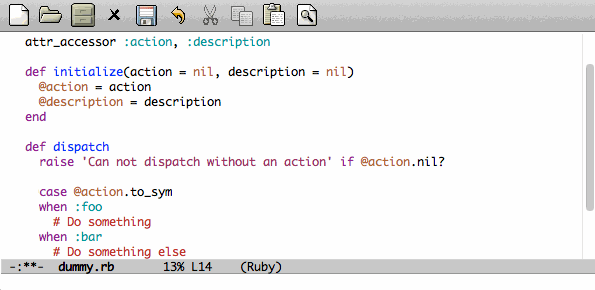
Windows manipulation
4.3.4 Buffers
A buffer is displayed in a frame.
- C-x b: switch to an already opened buffer
- C-x C-b: list opened buffer (and jump to the selected one)
- C-x k: kill a buffer

Buffer navigation
4.3.5 Cancel a command
- C-g or ESC ESC ESC: cancel the current command running in the minibuffer
4.3.6 The most useless one
- C-x C-c: quit emacs (use at your own risks!)
4.4 Help!
Emacs has a powerful built-in help system for key bindings and internal functionalities.
- C-h f <function-name>: Find the key binding corresponding to <function-name> (ex: C-h f save-buffer)
- C-h k <key-sequence>: Find the function name corresponding to <key-sequence> (ex: C-h k C-x C-s)
When executing these commands, a new frame opens. To close it, switch to it (C-x o) and type q. If not, simply close it (C-x 0)
Emacs also includes the full manual (also available online: http://www.gnu.org/software/emacs/manual/html_node/emacs/)
- C-h r: browse the Emacs manual within Emacs
Finally, there are so many other help functions: http://www.emacswiki.org/emacs/EmacsNewbieHelpReference
5 Building your own editor
From this point, we will edit the configuration file. For the moment, we will put everything in a single ~/.emacs.d/init.el file. Create it if it does not exist.
# Backup old configuration cp .emacs dot-emacs.old cp -R .emacs.d dot-emacs.d.old # Create new and empty configuration mkdir ~/.emacs.d touch ~/.emacs.d/init.el
5.1 First basic configuration
When you will have to change or add configuration, simply edit your ~/.emacs.d/init.el file and add what you need.
For exemple, here is a tweak that does nothing visually but is useful for other packages and the Emacs engine itself. It allows you to define your name and email. Emacs can use it to add author informations to a file when asked.
(setq user-full-name "Your full name") (setq user-mail-address "your@email.com")
After each configuration modification, two solutions:
- the soft & clever way: execute M-x eval-buffer
- the hard way: restart Emacs.
5.2 General basic configuration
Now, let's move to a more visual configuration basic set. As before, simply add this to your configuration file:
;; Ask "y" or "n" instead of "yes" or "no". Yes, laziness is great. (fset 'yes-or-no-p 'y-or-n-p) ;; Highlight corresponding parenthese when cursor is on one (show-paren-mode t) ;; Highlight tabulations (setq-default highlight-tabs t) ;; Show trailing white spaces (setq-default show-trailing-whitespace t) ;; Remove useless whitespaces before saving a file (add-hook 'before-save-hook 'whitespace-cleanup) (add-hook 'before-save-hook (lambda() (delete-trailing-whitespace)))
5.3 Backup files
You may have notice that the files you edit are duplicated and renamed with a ~ at the end. They are the backup files that Emacs creates for you with an auto-save feature. Sometimes it is great because you can recover a file in case of error, sometimes it is annoying because you can have some many of these files.
It is up to you to keep it or disable it. Here is the configuration for that:
;; Remove all backup files (setq make-backup-files nil) (setq backup-inhibited t) (setq auto-save-default nil)
An alternative method is to save these backups in a centralized folder:
;; Save backup files in a dedicated directory
(setq backup-directory-alist '(("." . "~/.saves")))
5.4 Setting up the locales
You may want to set up a specific locale for your files. Here is the trick:
;; Set locale to UTF8 (set-language-environment 'utf-8) (set-terminal-coding-system 'utf-8) (setq locale-coding-system 'utf-8) (set-default-coding-systems 'utf-8) (set-selection-coding-system 'utf-8) (prefer-coding-system 'utf-8)
5.5 More configuration
The best way to get your configuration better, is to read the manual … But you can also (this is the un-official method) read the others Emacs users' config files. There are so many people who share their configuration, comment their code, and distribute their modes!
Here is mine: (https://github.com/pierre-lecocq/emacs.d)
- The packages I use
- The common configuration
- The modes specific configuration
- The keybindings
5.6 Modes
Modes are Emacs' extensions that can be installed to extend the capabilities of Emacs. They will allow you to build a powerful tailored editor.
There are 2 kind of modes: minor and major.
5.6.1 Major modes
Major modes are modes that transform Emacs to a specialized software for editing a certain type of files (i.e c-mode) or managing special tasks (i.e reading emails, managing git repository, …)
Only one major mode can be used at a time.
5.6.2 Minor modes
Minor modes are additionnal modes that are added transparently to the major mode. They add more features to the main one (i.e parentheses matching, syntax or spelling checkers, …)
Several minor modes can be used at a time.
5.7 Package managers
Emacs has brilliant package managers such as package.el or el-get that allows you to add and update modes really easily.
5.7.1 Package.el
package.el is the built in package manager shipped by default with Emacs 24 or later.
To list available packages, simply type this command:
M-x package-list-packages
You will have a list of packages. Simply press ENTER on the name of one of it to install it.
Additionnaly, you can manage the packages list by adding other sources to your configuration file:
;; Add package sources
(setq package-archives '(("gnu" . "http://elpa.gnu.org/packages/")
("marmalade" . "http://marmalade-repo.org/packages/")
("melpa" . "http://melpa.milkbox.net/packages/")))
5.7.2 El-Get
/el-get/ is one of the most popular and easy to use package manager. The "apt-get" of Emacs. It is written by the great Dimitri Fontaine and is based on recipe files that simply describe where is located the package and how to get/compile/install it for you.
To use it, simply add this to your configuration file. It will download and set up el-get for you:
;; Set up el-get
(add-to-list 'load-path "~/.emacs.d/el-get/el-get")
(unless (require 'el-get nil 'noerror)
(with-current-buffer
(url-retrieve-synchronously
"https://raw.github.com/dimitri/el-get/master/el-get-install.el")
(let (el-get-master-branch)
(goto-char (point-max))
(eval-print-last-sexp))))
From this point, we will use el-get to install packages.
5.7.3 Install your first packages with el-get
Here is how to install a few packages. All the packages that you will install in the future will be done with the same method.
Let's say that we want to install 2 packages for the begining:
- color-theme in order to allow us to change colors themes
- autopair in order to close automatically parentheses, brackets and braces when you open it
Simply add this code at the bottom of your configuration file:
;; List of all wanted packages (setq el-get-packages '( color-theme autopair ;; Add any other packages here ... )) (el-get 'sync el-get-packages)
This code will install packages from the list named el-get-packages we defined just above. In the future, if you want to add a package, simply add its name to this list.
Available packages are listed here.
5.8 Some useful packages
As a developer, you will need some packages that will help you to work, increase your productivity and enhance your confort while coding. Please note that even if I am a Ruby/shell/Lisp/web/PHP developer, some packages are compatible and useful for every kind of development. Therefore, the base packages are listed here but some specific packages that might be useful for your work are eventually not listed here. It is up to you to adapt the list according to your needs!
Tip: After adding packages, restart Emacs in order to let el-get download and install it properly.
5.8.1 Auto complete
Auto completion is a must-have feature in the development world. This package simply displays a popup at the cursor position with the available completions.
To install it, add auto-complete to your packages list.
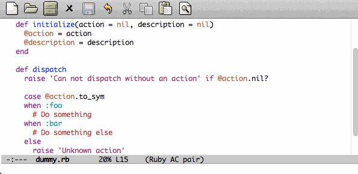
5.8.2 Autopair
When you open a quote/parenthese/bracket/curly bracket, this mode automatically adds the closed one and bring your cusror between the two. Very useful to avoid syntax errors, for example.
To install it, add autopair to your packages list.
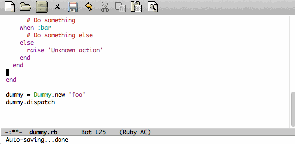
5.8.3 Buffer move
This mode allows you to re-organize and move the buffers from a window to another. Useful if you want to switch buffer places in order to have your debugging buffer on the right side, for example.
To install it, add buffer-move to your packages list.
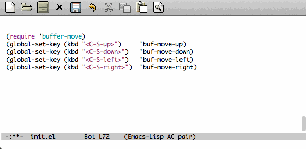
5.8.4 Flycheck
This mode check the syntax of a buffer. It could be used for checking code syntax or typos when writing any kind of text.
To install it, add flycheck to your packages list.
5.8.5 Highlight symbol
This mode highlights all symbols that matches a pattern in your buffer
To install it, add highlight-symbol to your packages list.
5.8.6 Ido
Ido is a must have mode to navigate, find stuffs, and do things interactively. It is for comfort, but is indispensable to go fast.
Many extensions of this mode are available, therefore read and chose what you want.
I personnaly use two of them: vertical and hack.
To install it, add ido-hacks and ido-vertical-mode to your packages list.
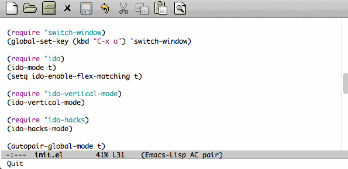
5.8.7 JS3
This mode is an enhanced mode for editing Javascript files. I do not use it a lot, but it is useful for some javascript-like or NPM files.
To install it, add js3-mode to your packages list.
5.8.8 Magit
5.8.9 Multiple cursors
5.8.10 PHP mode
A basic but stable mode for editing PHP files, whatever you think about PHP …
To install it, add php-mode to your packages list.
5.8.11 Rainbow mode
A useless but indispensable mode to add colors to your CSS files when using properties like "color", "background-color". It is cool since it understands every way to write a color (hex, name, …) and gives you a preview of the color itself.
To install it, add rainbow-mode to your packages list.
5.8.12 RHTML mode
This mode is useful for editing .rhtml files. You can also use it to edit any kinf of ruby templates (i.e .erb).
To install it, add rhtml-mode to your packages list.
5.8.13 Ruby mode
5.8.14 Switch window
This mode is cool when you work with a lot of windows opened. If you want to switch to another one, you have to press C-x o until you reach the wanted window. With this mode, when you press C-x o, big numbers replace your opened windows. Simply type the corresponding number to reach the wanted window.
To install it, add switch-window to your packages list.
Then do not forget to override the defaut configuration by adding this to your configuration:
(global-set-key (kbd "C-x o") 'switch-window)
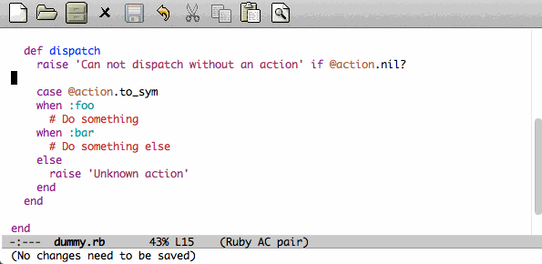
5.8.15 Visual regexp
This mode highlights the text that matches the regexp that you are writing in the mini buffer.
To install it, add visual-regexp to your packages list.
5.8.16 Yaml mode
5.8.17 Yasnippet
A mode that allows you to write code faster if you are lazy. It is very easy to create your own snippets and use it whatever the file you are editing (code, non-code, emails, …)
I personnaly do not use it, but people coming from Textmate/Sublime would love it.
To install it, add yasnippet to your packages list.
5.8.18 Paredit
Paredit is a really cool mode to "keep parentheses balanced" and navigating in the S-expressions. Useful and indispensable if you write Lisp code, for example.
To install it, add paredit to your packages list.
5.9 Code navigation
Navigate through source code is an indispensable feature in code editors. Some of other editors are focused on this (like Sublime) but the problem is that they do not leave you the choices of the weapons (like every other features).
Emacs, as you noticed (yes, you did) can integrate any external tool or include a large variety of internal tools to make it more efficient. Code navigation is not an exception.
There are a lot of packages in order to navigate through code, with different methodologies and advantages:
- TAGS (built in. No installation required)
- Projectile (install it by adding
projectileto your packages list) - Helm (install it by adding
hemlto your packages list) - Emacs CEDET (install it by adding
cedetto your packages list) - …
(Note: use once at a time! You do not need to install them all)
After using Projectile for a certain period of time, I gave Helm a shot but finally got back to the simplicity and the efficiency of the TAGS system. Nevertheless, Projectile and Helm are really powerful and useful. You really should look at them.
For now, I will cover the basics of TAGS since it is a standard (used by other softwares) and it is built-in (so if you use another Emacs without your config, you still know how to surf in the code). And other useful tricks will be shown here.
5.9.1 Tags basics
Basically, the TAGS rely on an index file of the content of your code source. In the root folder of a project, you must generate your index. Several methods for this, but here is one command that generates the file:
cd /path/to/your/project find . -regex ".*\.\(c\|h\|rb\|py\|php\|js\|sh\|bash\)" -print | xargs etags -a
You now should see a "TAGS" file. If needed, exclude this file from your git/svn/whatever repository/.
You are now ready to surf!
Now, here are the main commands to use them:
- M-. is the equivalent of M-x find-tag: find a tag
- M-x find-tag-other-window: find a tag, but in another window
- M-x tags-search: find a tag thanks to a regexp
- M-x tags-query-replace: replace a tag in all the indexed files
- M-x tags-apropos: list all tags that match a regexp
- M-x list-tags: list all tags in a file
5.9.2 List functions or methods
In order to list and jump easily between the functions or methods of the current file, here is a little trick:
(global-set-key (kbd "C-S-f") 'imenu) ;; use iMenu
After pressing Ctrl-Shift-f (replace it by whatever you want!), a menu with all the available resources appears in the minibuffer. Select the resource you want (let's say All.methods if you are editing some code) and you will be able to search and jump to a method definition directly.
5.9.3 Files navigation (a.k.a fuzzy matching) with TAGS and ido
In order to find and jump easily to a file in your project thanks to TAGS, you have to add a little function to your confiugration.
For this you should have installed the ido-mode described above.
(defun ido-find-file-in-tag-files ()
(interactive)
(save-excursion
(let ((enable-recursive-minibuffers t))
(visit-tags-table-buffer))
(find-file
(expand-file-name
(ido-completing-read
"Project file: " (tags-table-files) nil t)))))
(global-set-key (kbd "C-S-x C-S-f") 'ido-find-file-in-tag-files)
Now, in your project folder and once you generated your TAGS file, you can press C-S-x C-S-f to find files through the whole tree of directories just by typing a pattern.
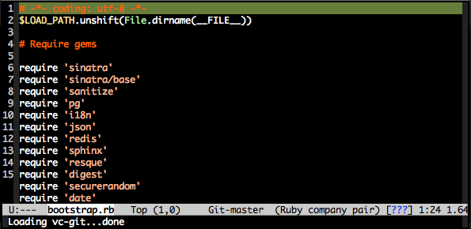
5.9.4 RGrep
rgrep is a great tool to use in addition of the TAGS. It is a Unix tool that make grep queries recursively. In Emacs, it will bring you a new buffer with all the results of the command. To use it, simply type:
M-x rgrep RET yoursearchterm RET
Once fired, you can swith to the newly created buffer, parse the results and jump to the wanted files very quickly.
What is cool is that it is integrated in the editor, just beside your code and does not require to switch to a shell and then copy-paste the files path you want.
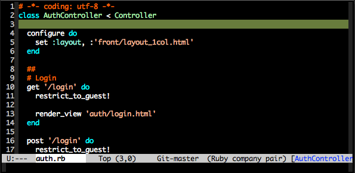
5.10 Setting a color theme
Now, we are talking about something very touchy and that can be a long quest …
A color theme generally includes colors for:
- background
- syntax color (for code)
- specific modes colors (gnus, dired, git, …)
There are several ways to install a color theme, but first, we will use the Emacs' internal color-theme library.
Let's try to switch between different themes:
- Type M-x load-theme RET tango-dark
- Then type M-x load-theme RET wombat
- Finally type M-x load-theme RET whiteboard
There is no secret or perfect color theme. There are so many of theme and each user has its preferences in term of colors.

color themes
In order to choose yours, try the default ones, see this showcase, make your own or google a lot !
5.10.1 Font settings
After setting up your theme, there are some other tweaks that are "color theme related". Fonts is something very important depending on your system, your screen size, your current task in Emacs, … etc
If you want to change the font directly from your current Emacs instance, simply type M-x set-frame-font RET. And if you want to see all supported fonts, type TAB twice. It will show you a list.
The global and easy way to do it is to add a line to your configuration:
(set-default-font "DejaVu Sans Mono-10")
But to be safe, you'd better add this into your X resource settings file (~/.Xresources):
emacs.font: DejaVu Sans Mono-10
Of course, it is possible to set a different font for any system or mode you want. It is cool since you can use different font (size) if you are on Linux or mac OR if you write a book, write code, read your emails, … etc. As an exercise, I'll let you search how to do this kind of stuff in Emacs Lisp if you need it.
If you want more about font settings and especially about font names, please see the Emacs wiki page or the manual.
A last point: sometimes you want to change the font size of your current buffer. To do this, simply type:
- M-x text-scale-increase or C-x C-+
- M-x text-scale-decrease or C-x C– (Ctrl x, Ctrl dash)
Really handy if you show your screen through an external display or you want to focus on a specific part of a file.
6 Special features
6.1 Emacs as a file manager
Emacs has a built-in mode named dired that allows you to manage your file system directly in Emacs really easily. It is very powerful and has features that graphical file managers do not have.
First of all, to launch it, type:
- M-x dired RET and then select a path to open (default is the directory of the file you are editing)
- or C-x d if you prefer keybindings
Here are a few quick shortcuts once you are in dired mode
- R (capital R): rename a file
- D (capital D): delete a file
- +: create a new directory
- Z: compress the file
- RET (enter): Open the file
- g: refresh
- q: close the dired window
Of course, files can be marked to operate on a selection of them. Use m to mark, u to unmark (U to unmark all), % m to mark according to a pattern.
Note that there are so many tricks, extensions and features in dired mode that I let you see around what you need.
6.2 Working locally vs remotely
Emacs, once installed on your machine will allow you to edit your file locally, obviously.
Other people (non-Emacs users) will do a dirty trick to edit remote files like they were local files. They will mount the remote directory on their machine (thanks to sshfs). But the magic in Emacs is that you can transparently edit remote files on your development servers for example. To do so, Emacs comes with a genious extension named "Tramp". It is alreay installed and available when you install Emacs.
If you press C-x C-f, you can open a file. But if you ask myname@myserver.com:/path/to/file, it will automatically connect to the server and let you edit the remote file. Easy as pie.
Tramp supports lots of protocols like ssh, ftp, and so on.
And what is great is that if you are editing a remote file and you launch a shell in Emacs, it will automatically set the shell into your remote environment and open it as if you were in the remote directory the file is in.
A last tip about TRAMP. If you simply add sudo: in front of your file path, you edit your file with higher privileges. It is a very useful feature if you need to edit your configuration files on a server, for example. Of course, it works remotely and locally.
6.3 Organize your work, write papers and manage your agenda
In Emacs, you can do everything. This is a fact.
One the most amazing and complete mode is the amazing Org mode, written by amazing people. But when I say amazing, it is absolutly amazing. It allows you to "live in Emacs".
Here a a few of its am… features:
- A full agenda / calendar
- TODO lists and project management
- Writing (research papers, books, an "Emacs for developers" whitepaper, your shopping list …)
- Include code in you papers
- Tables and spreadsheets (with formulas and calculation)
- Mobile integration
- …
And what is really cool is that every thing you do in Org is exportable in:
- LaTex
- HTML
- Text
- ODT
- iCalendar
- TextInfo
- … and many more.
You really should check their list of features
If you want to see a good example of Org-mode capabilities, check that great page
6.4 Emails in Emacs
There are packages that let you use Emacs as a full featured MUA. Reading emails, sending emails, filtering, archiving … etc.
Emacs can be a very powerful and fast e-mail client and as it is controlled by the keyboard, it could be more efficient than a graphical e-mail client (clicking is a loss of time). I use it for years now and I can not imagine using another program to read my emails.
There are several package to do so, but the most used is Gnus. It is already installed with Emacs.
Here are some of its features beside the basic ones:
- Gnus is in fact a newsreader used to interact with email servers. So you can use to fetch messages from newsgroups, RSS, SMTP, POP, …
- Easy and powerful mail splitting
- Integration with BBDB, a contact manager
- Message scoring
- LDAP
- PGP signing and encrypting
- Customizable layout
- Encrypted file to manage your credentials
- … and many more
- … and of course, it is extensible thanks to Lisp
You really should try it with your personnal account. It is easy to configure and integrate with Gmail, for example.
But be careful! If you try it, you will love it.
Some alternatives to Gnus (that I do not use, but that are popular):
6.5 Some great Emacs tips and tricks
- Emacs is all about Macros. This is one of its most powerful feature. Record a sequence and re-play it on other lines! Here is how.
- Using shell inside Emacs is cool
- You really should use the /bookmarks/ functionnality to save your projects locations (locally or remotely)
- When opening a file, add sudo: in front of its path in order to edit it as a privileged user
- You can edit files in hexadecimal directly in Emacs thanks to the hexl-mode
- Emacs allows you to open an archive (gz, bz2, zip, …), edit its files on-the-fly without extracting yourself the archive. To do so, simple open the file directly in Emacs (C-x C-f /path/to/archive.tar.bz2)
- Rectangle regions edition is really easy
- Compilation and debugging is really well supported in Emacs
- Erc is a great IRC client running in Emacs
To be continued
6.6 Coming from other editors (i.e Vim)
Some people use other editors and want to give Emacs a try. Some people are really used to use a specific editor. Some people do not want to lose their habits and their learning curve.
I am thinking about Vim, but it is also true for other editors (textmate, sublime, …)
Emacs has a mode that allows you to use it exactly like Vim.
I personnaly never used this mode, but many people use it. Therefore, it allows you to switch gently and softly from Vim to Emacs.
7 Readings and resources
- Emacs rocks videos
- Avdi Grimm Emacs reboot series
- Mastering Emacs
- Sacha's blog and her wonderful Emacs contributors interviews serie
- Emacs redux by Bozhidar Batsov
- Planet Emacsen
- Emacs sub-reddit
And of course, the Emacs wiki
8 License
The content of this project itself is licensed under the Creative Commons Attribution 3.0 license, and the underlying source code used to format and display that content is licensed under the MIT license.
Contributors list can be found here.
9 Thanks
I want to thank some of the great people who make Emacs a very intersting piece of software or make its community very active (the sort order is absolutly not important here):
Bastien Guerry, Dimitri Fontaine, Julien Danjou, Sacha Chua, Steve Purcell, Nic Ferrier, Avdi Grimm, Magnars, Steve Yegge, Bozhidar Batsov, Xah Lee, and many more …
You should check those people and their work over the web, twitter, youtube, …
And thank you for reading this !